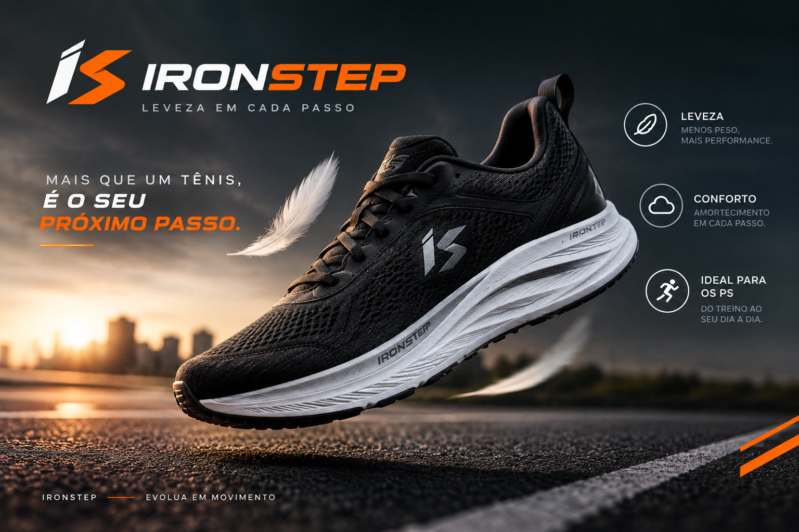
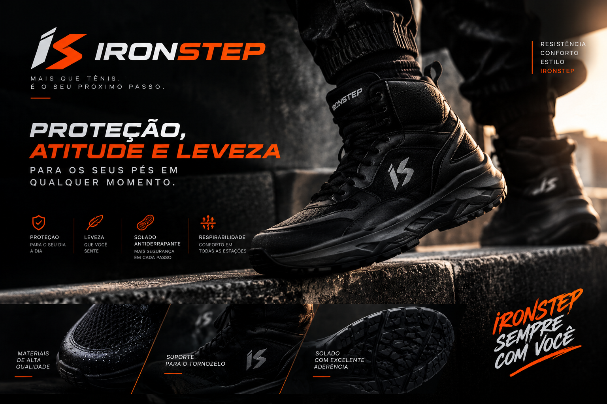

Tênis de corrida

Leveza, conforto e perfomance para o seu dia a dia
Na IronStep, oferecemos produtos e serviços pensados para garantir conforto, proteção e estilo para os seus pés.

Leveza, conforto e perfomance para o seu dia a dia

Proteção, atitude e leveza para os seus pés em qualquer momento.
Trabalhamos com tênis para corrida, caminhada, uso casual e atividades esportivas.
Escolha modelos e detalhes que combinam com seu estilo e suas necessidades.
Nossa equipe ajuda você a encontrar o modelo mais adequado para cada momento.
| Modelo | Indicação | Conforto | Preço |
|---|---|---|---|
| IronStep Run | Corrida | Alto | R$ 199,90 |
| IronStep High | Uso diário | Alto | R$ 229,90 |
| IronStep Sport | Esportes | Médio | R$ 179,90 |